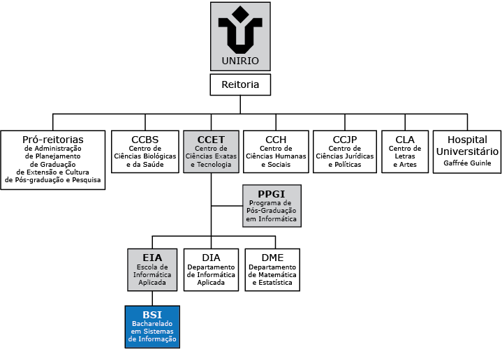

Institucional
O Bacharelado em Sistemas de Informação é um curso da Escola de Informática Aplicada (EIA), que é uma unidade acadêmica do Centro de Ciências Exatas e Tecnologia (CCET) da Universidade Federal do Estado do Rio de Janeiro (UNIRIO).

Vale lembrar que também temos o curso PPGI (Programa de Pós-Graduação em Informática), que é voltado para os que já terminaram a graduação e desejam cursar um Mestrado em Informática com ênfase em Sistemas de Informação.